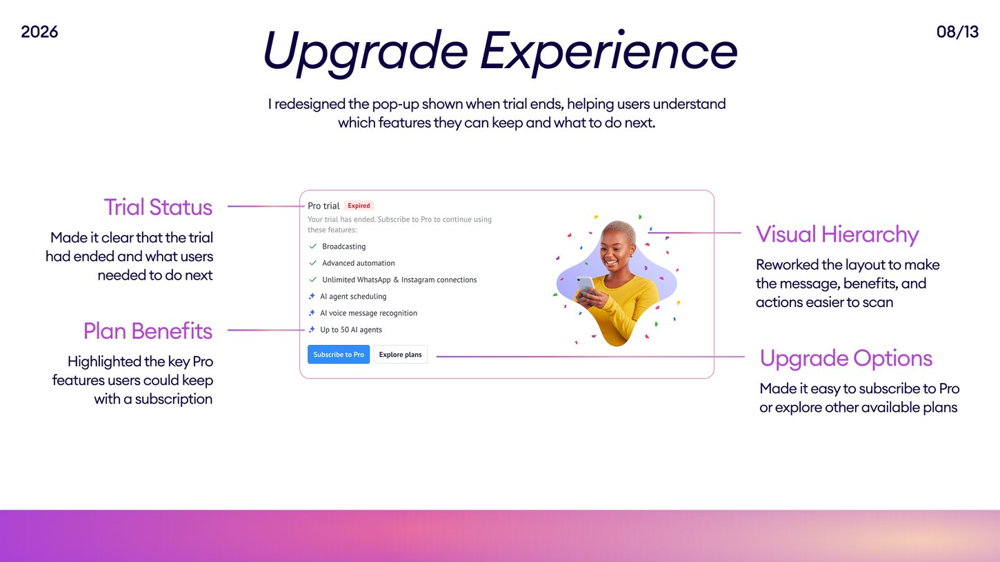

Different moments call for different kinds of clarity, from exploring features to renewing a plan.
Designing across the website and the product
I worked on the marketing site and in-product experiences, from feature discovery to subscriptions.



Context
Focused improvements across one connected product
amoCRM helps teams manage sales and customer conversations. Kommo is its international brand. My work covered focused updates across the website and CRM, rather than one full redesign.
Work areas
Ten parts of one customer journey
Select an area to see where it lives in the case.
Website
Helping people explore the product
I worked on the homepage, navigation, AI page, and pricing to make features easier to discover and compare.
Design decision
Navigation had to make the range of product capabilities visible without turning the homepage into a catalogue.
In-app
Introducing features inside the CRM
I designed integration pages, including WhatsApp, to explain what users could do and how to get connected.
01Discover
Find the integration from the CRM.
02Understand
See the value before setup.
03Connect
Enter setup from the same page.
Upgrades
Making plan choices clearer
I added a new AI plan, feature videos, and updated plan details. I also reworked the end-of-trial pop-up to clarify next steps.
Renewal
The problem wasn’t the number of steps
The renewal flow needed clearer feedback, not a shorter path. I added a waiting state so users could see when their request was being processed.
Remove steps
A shorter flow looked like the obvious answer.
Show progress
People needed feedback while the request was processing.
Waiting state
Status stays visible until the renewal is confirmed.
Impact
From designs to release
Across the website and in-product flows, I shipped focused improvements, expanded the component library, and helped review how designs reached production.
- Design-system components created and documented
- 40+
- Release demos reviewed for design consistency
- 15+
- Pricing page redesigned and shipped
- 01